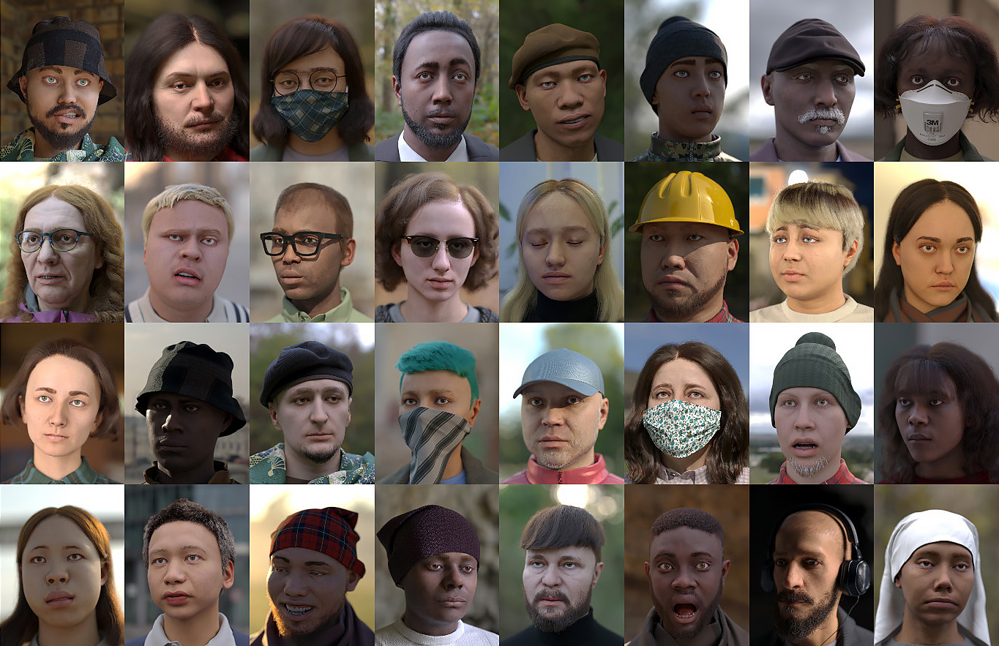
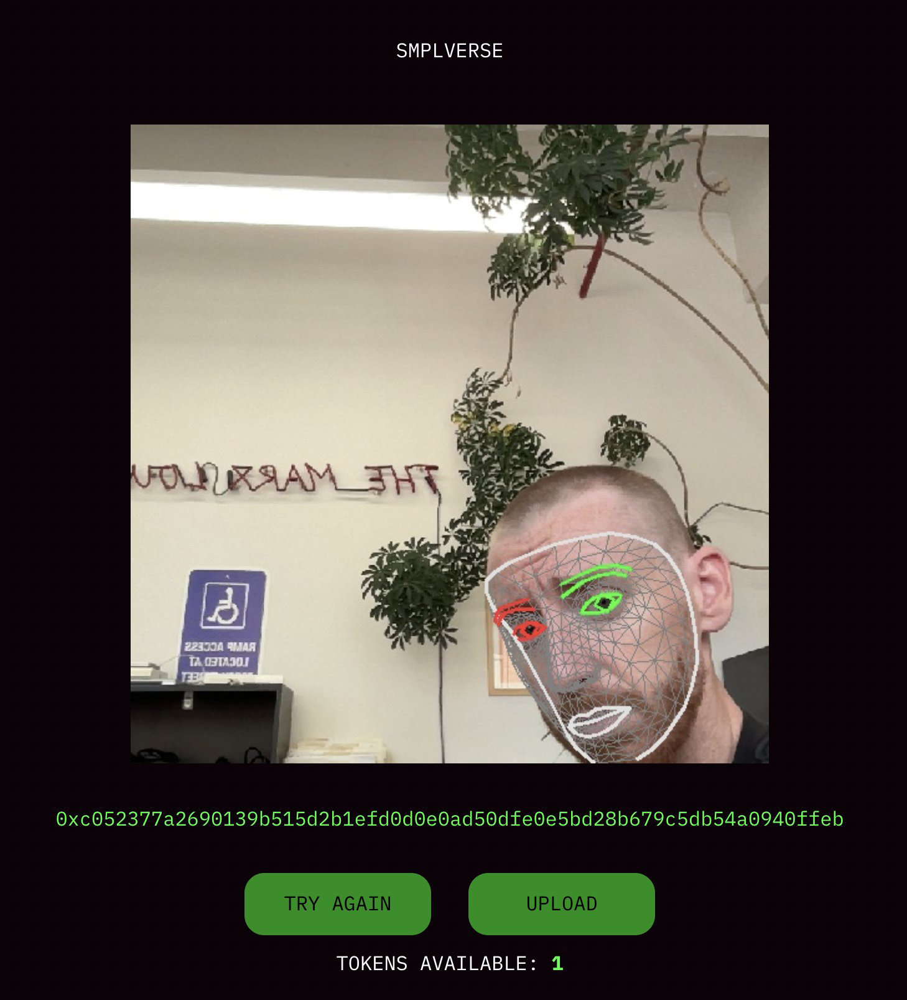

◟◝
SMPLverse
2022
SMPLverse NFTs use facial recognition to match users to images synthesized by Microsoft to train face tracking algorithms for its mixed reality headsets. Like many NFT projects, Microsoft's dataset was procedurally-generated from a library of digital assets: from a template 3D face model, 100,000 images were rendered with random identities, expressions, textures, hair, clothing, and environments.
Synthetic data is increasingly used to train computer vision algorithms because it is diverse and perfectly labeled by design. In mixed reality headsets, these algorithms communicate the slightest expressions of bodily reality to virtual images. The synthetic data on which these algorithms are trained are the medium of this communication, the skins we wear on the metaverse's computational layer. The figures in Microsoft's dataset resemble the avatars that populate the metaverse's surface, yet they function as avatars for the centralized infrastructure along which all other avatars travel.
If the fundamental problem animating NFT projects consists of investing an image with new identities and realities, SMPLverse questions the possibility of controlling one's image in a context where the prevailing modes of representation are determined by the market. Trafficking in the conventions of the NFT market, SMPLverse frees Microsoft's images to have experiences which their original creators had never dreamed of. Yet even in this parallel existence, the images never wholly abandon their indifference to our identifications. No matter what we do to them, they will never be real.
Project Site
Project Statement (Mirror)
Project Twitter
Press:
Zora Zine,
JPEG2000,
Gilbert Again (Mirror),
worthlessjpeg.eth (Mirror)
Support: Friends With Benefits


